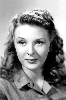
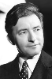
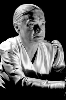

Country:United States, 70 minutes
Spoken languages:
Genres:Horror, Drama
Director(s):George Waggner
Writer(s):Curt Siodmak
Video Codec:Unknown
Number: 1084


Certification:
Storyline:
After his brother's death, Larry Talbot returns home to his father and the family estate. Events soon take a turn for the worse when Larry is bitten by a werewolf.
Cast:   


Medium: Original DVD,
Comments: Part of: The Wolf Man - The Legacy Collection
Loaned: No
Aspect ratio: Unknown